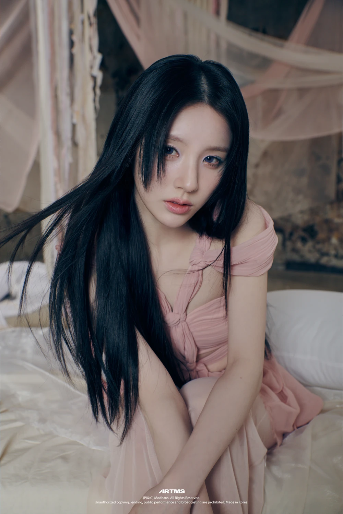
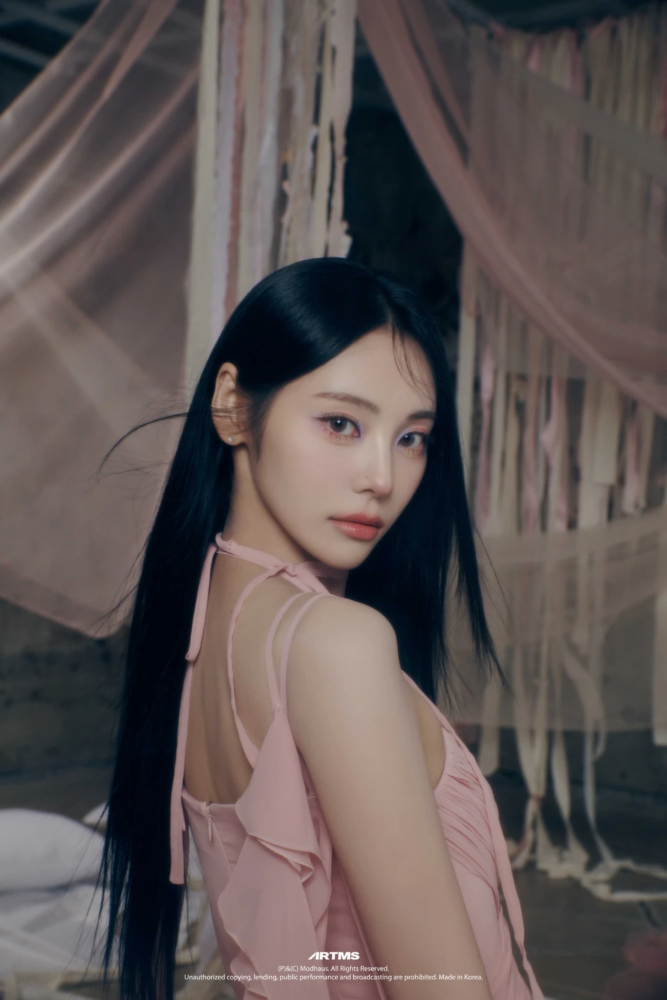
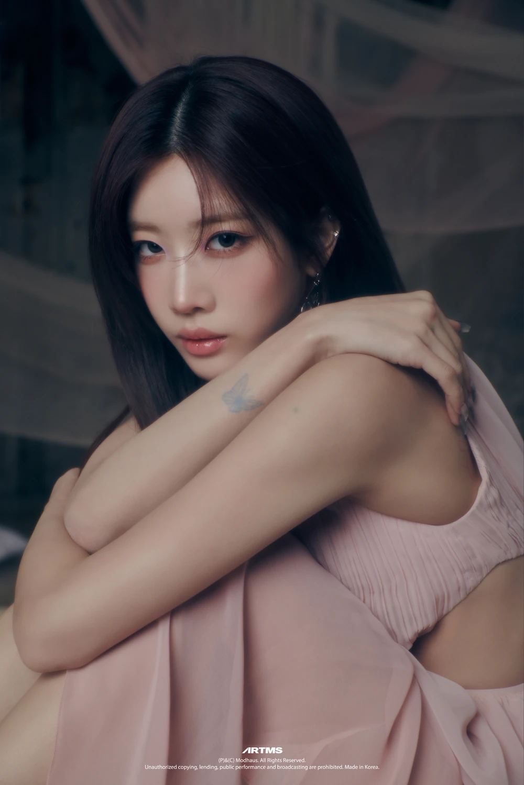
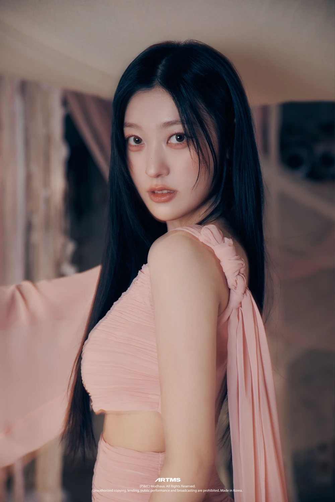

Heejin
HeeJin é conhecida por sua personalidade confiante, determinada e versátil. Sua cor representativa é o rosa vivo.

HeeJin é conhecida por sua personalidade confiante, determinada e versátil. Sua cor representativa é o rosa vivo.
Haseul possui uma personalidade gentil, calma e cuidadosa, sendo conhecida por seu lado acolhedor. Sua cor representativa é o verde.

Jinsoul é conhecida por ser divertida, espontânea e confiante, com uma personalidade marcante. Sua cor representativa é o azul.

Kim Lip tem uma personalidade determinada, responsável e carismática, equilibrando seu lado sério com seu humor. Sua cor representativa é o vermelho.

Choerry é conhecida por sua personalidade alegre, energética e amigável, sempre transmitindo uma vibe positiva. Sua cor representativa é o roxo.